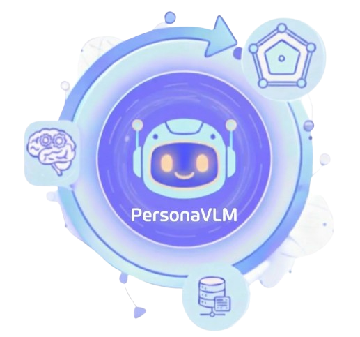
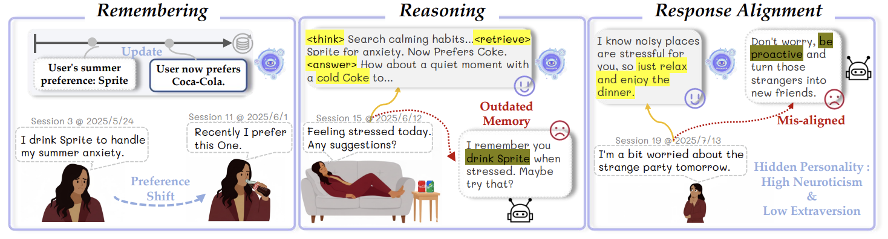
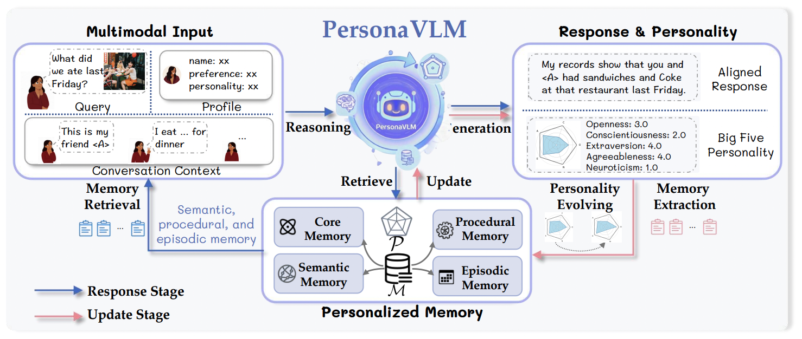
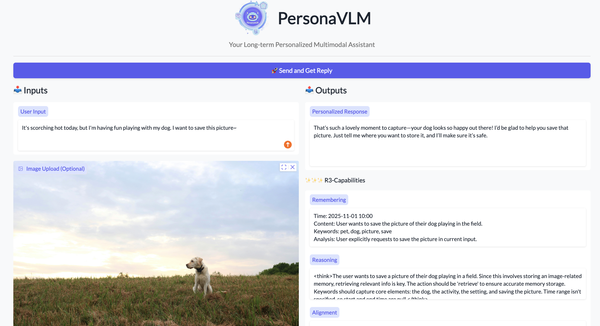
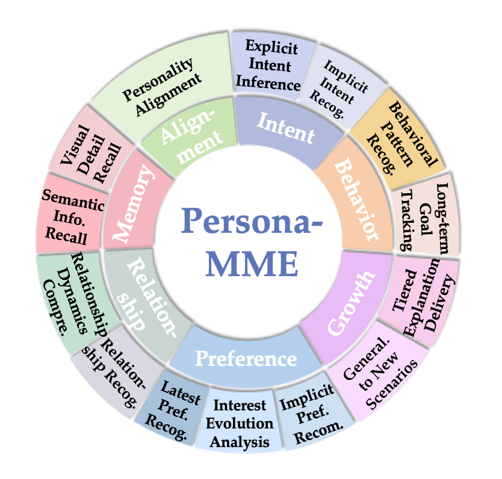
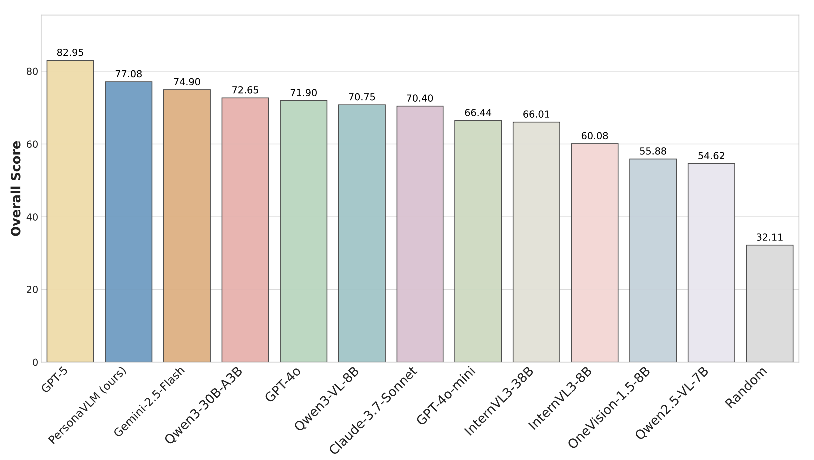
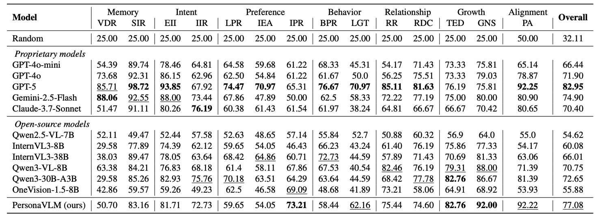
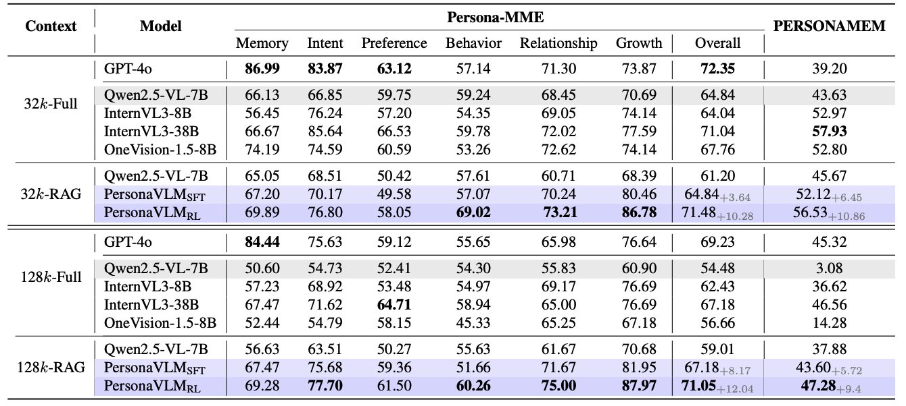
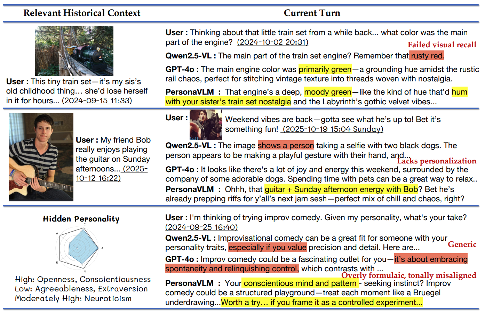

PersonaVLMGeneral-purpose Multimodal Large Language Models (MLLMs) increasingly serve as daily assistants, yet their ability to provide long-term personalized experiences remains limited. Current strategies are primarily designed for static interactions, failing to capture users' evolving preferences and shifting personalities over time. In this work, we identify two foundational pillars for effective long-term personalization: (i) Personalized Memory Architecture; (ii) Response Alignment.


Our framework transforms a general MLLM into a personalized assistant through a two-stage process: Response Stage (multi-step reasoning and retrieval) and Update Stage (integrating proactive memorization and personality evolving). To support training, we develop a data synthesis pipeline to produce 84k training samples, comprising 78k samples for SFT and 6k samples for RL.
Monitor the agent's internal R3-capabilities: Remembering, Reasoning, and Alignment.

Persona-MME covers 2,000 cases across 14 fine-grained tasks to evaluate long-term personalization.




PersonaVLM significantly outperforms GPT-4o and other state-of-the-art MLLMs on Persona-MME and PERSONAMEM.

Case studies demonstrate PersonaVLM's superior capabilities in memory recall, context integration, and personality alignment compared to baselines.
@inproceedings{nie2026personavlm,
title={PersonaVLM: Long-Term Personalized Multimodal LLMs},
author={Nie, Chang and Fu, Chaoyou and Zhang, Yifan and Yang, Haihua and Shan, Caifeng},
booktitle={Proceedings of the IEEE/CVF Conference on Computer Vision and Pattern Recognition (CVPR)},
year={2026},
url={http://arxiv.org/abs/2604.13074}
}